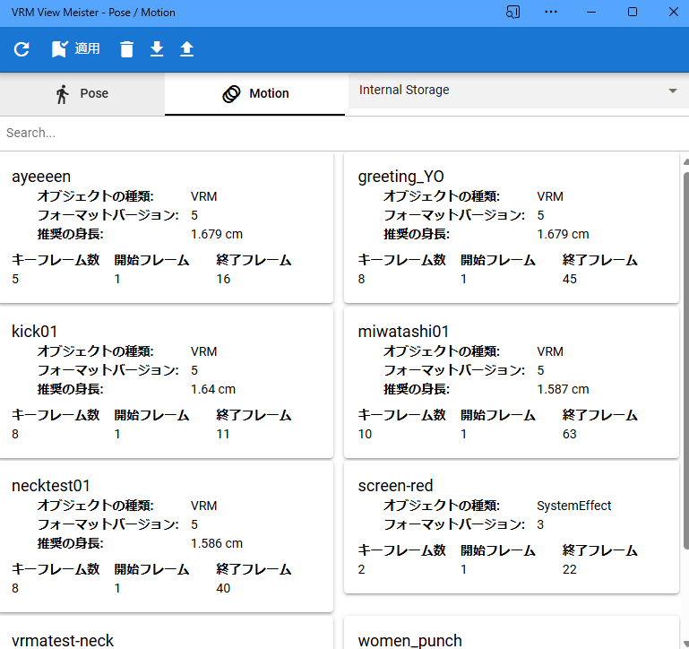
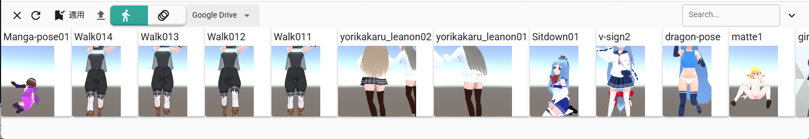
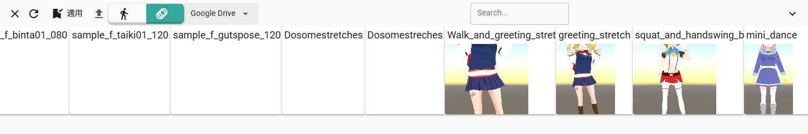

6.8. Pose/Motion list
Dialog (pause) |
Dialog (Motion) |
|
 |

Starting with version 2.18.0, it can now be displayed in the same position as the timeline panel at the bottom of the main window.
パネル(ポーズ) |
 |
Panel (Motion) |
 |
From ver 2.3.0, the pose list also supports motion management. A new window will open. It is a separate window from the app.
From ver 2.9.0, it is now possible to display it inside the main window of the app by setting.
You can save a single pose for VRoid/VRM.
Motion can load all object (cast) types.
- Toolbar
- Close:
When the panel is visible, close it and return to the Timeline panel.
- Reload:
Reload the pose list.
- Apply Pose:
Reflects the currently selected pose to the currently selected VRoid/VRM. You can also apply the pose/motion by double-clicking (double-tapping).
- delete pose:
Delete the currently selected pose.
When the panel is displayed, you can right-click on any pose or motion and select it from the menu that appears.
Currently, you can only delete files from the internal storage when deleting them from the app.
- Download as file:
Download the currently selected pose to a file. When the panel is displayed, you can right-click on any pose or motion and select it from the menu that appears.
- open from file:
Open the pose file from your terminal.
- Tab
- Pose:
Switch list to pose
- Motion:
Switch list to motion
- Combo-box
- Load location:
Select from Internal Storage, Google Drive, or Application.
Kind
Meaning
Internal Storage
Internal Storage
Google Drive
Google Drive
Application
Application (i.e. preset sample)
- Bottom
- Pose/Motion list:
Displays saved poses and motions.
The poses come with thumbnails. The pose name and the avatar (VRM) name at the time of saving are displayed next to the thumbnail.
Motion displays the corresponding object type, format version, number of keyframes, start frame, and end frame.
Hint
Depending on the size of the window, it will be displayed in 2 columns or 3 columns.